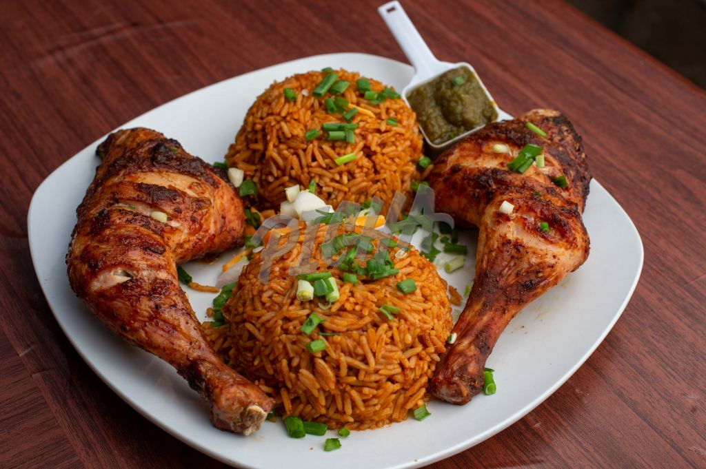

Ghanaian Jollof Rice

Description
Many countries in West Africa such as Ghana, Nigeria, and Senegal eat jollof rice. But each of the countries has special and different ways they prepare jollof rice.
Ghanaian jollof rice is the best and the sweetest jollof rice in Africa. Today, I'll be showing you how to make a palatable and appetizing Ghanaian jollof rice.
Ingredients
- 2 large yellow onions, roughly chopped
- ⅓ cup vegetable oil, plus 2 tablespoons, divided
- 14 oz diced tomato, 2 cans
- 6 oz tomato paste, 1 can
- Pepper
- Ginger
- Garlic
- Salt
- walter
- Species
- fried chicken
- 2 ½ cups long grain rice, rinsed
- 1 cup mixed vegetable
Steps
- Blend onions, pepper, ginger, and garlic and put the mixture in a bowl
- Blend tomatoes and put it in a bowl
- Heat oil in a large, heavy-bottomed pot over medium heat.
- Once the oil is shimmering, add the onion puree and cook until the water has cooked out and the puree is starting to brown, about 10 minutes.
- Add blended tomatoes, salt, and species of your choice
- Cook for 20-30 minutes, stirring occasionally, until the stew has reduced by half and is deep red in color.
- Add the rice and water. Bring to a boil, then reduce the heat to low and cover the pot with foil and a lid. Simmer for another 30 minutes, until the rice is cooked through and the liquid is absorbed.
- Add mixed vegetables and stir. Let it simmer for about 3 minutes
Serve the jollof rice with a meat of your choice like fried chicken